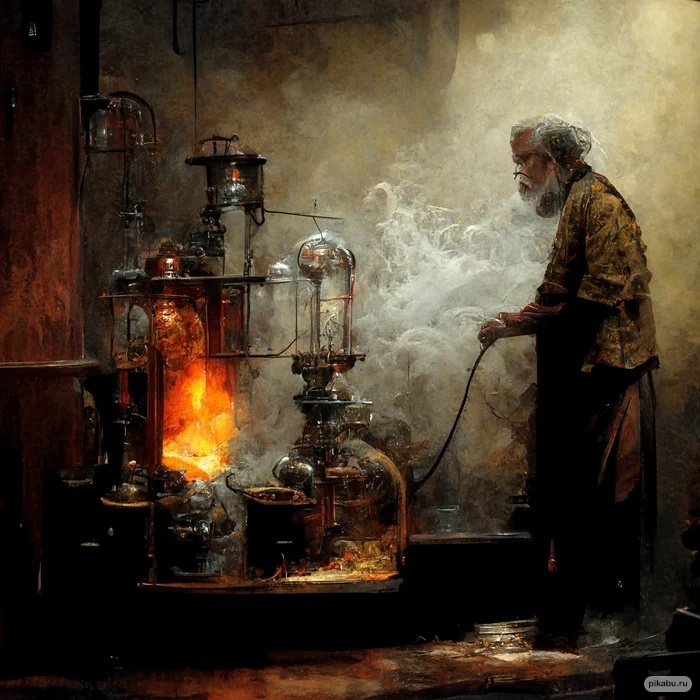
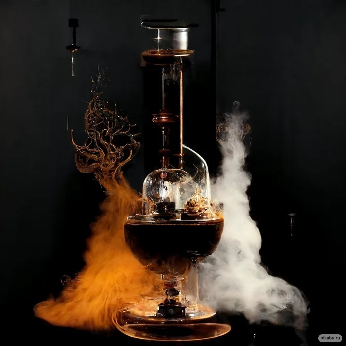
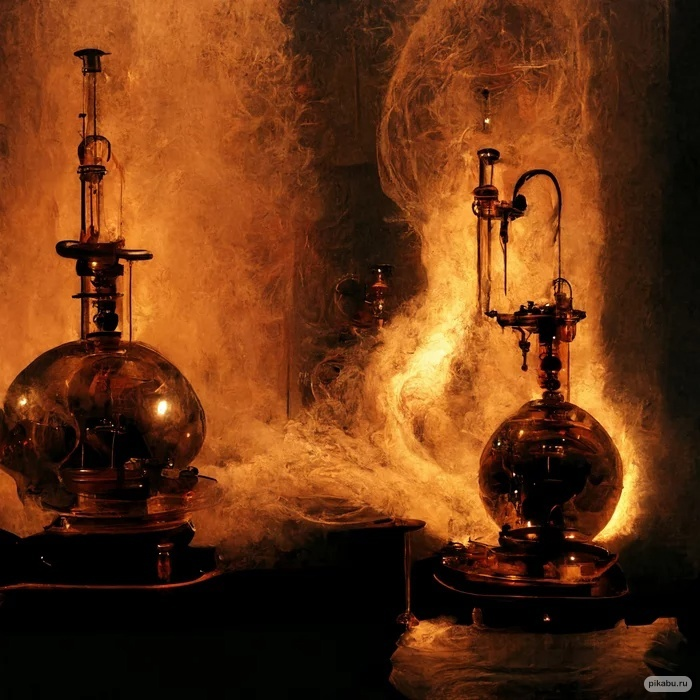
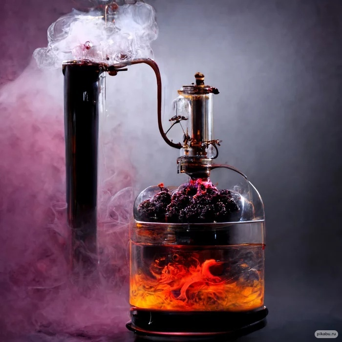
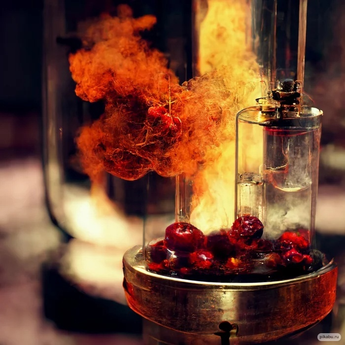
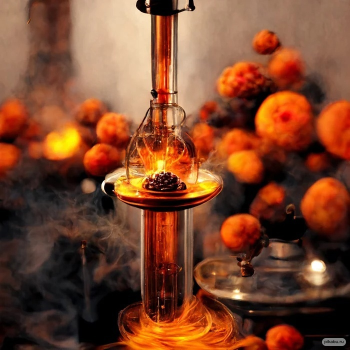
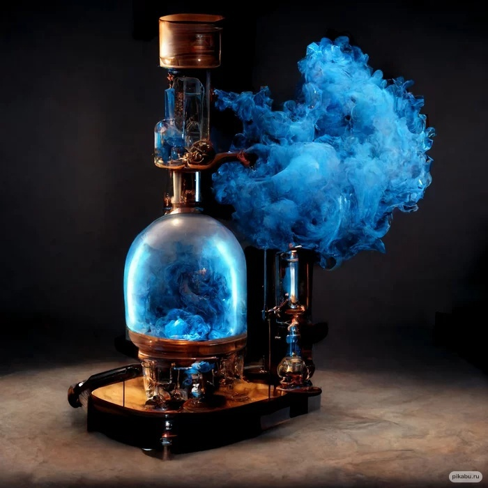
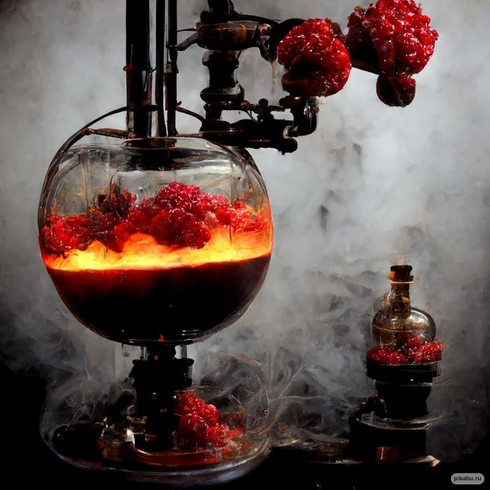

Рецепт настойки на Иван-чае
Классическая настойка из вишни
Рецепт «Зубровки»
Настойка на сухофруктах
Рецепт Бехеровки
Настойка чернослива на водке
Рецепт Калгановки
Рецепт Ерофеича
Водка
Видео
Процесс работы







